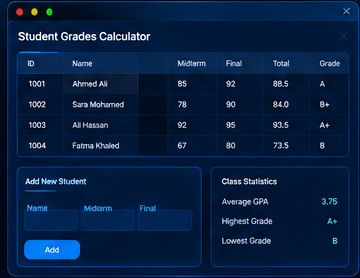
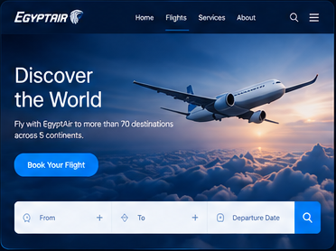
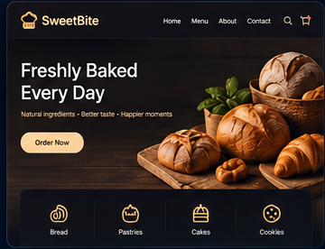
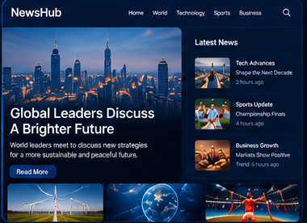

Programming
Java • C++ • Object-Oriented Programming
IT STUDENT • ASPIRING DEVOPS & CLOUD ENGINEER
Information Technology student building a strong foundation in software development, problem solving, and the technologies that power modern cloud and DevOps environments.
01 / ABOUT
I'm an Information Technology student at Menoufia University with a strong interest in DevOps, cloud computing, Linux, and software development.
My current goal is to strengthen my foundations through hands-on projects, problem solving, and continuous learning while preparing for internship opportunities.
02 / SKILLS
A practical foundation across programming, web development, and core IT concepts, with DevOps and cloud as my current direction.
Java • C++ • Object-Oriented Programming
HTML • CSS • JavaScript • WordPress
Problem Solving • Software Fundamentals • GUI Development
DevOps • Cloud Computing • Linux • Automation
03 / PROJECTS
A selection of projects that reflect my work across Java development, front-end web development, and WordPress.

A Java GUI application for calculating and managing student grades, built as an academic project with a focus on Object-Oriented Programming.

A front-end website project inspired by Egypt Air, focusing on page structure, styling, layout, and interactive web elements.

A website project focused on presenting bakery content through a clean interface, organized page structure, and responsive styling.

A WordPress-based news website focused on content organization, publishing, and presenting information in a user-friendly layout.
04 / EDUCATION
Building my IT foundation through university study and practical projects.
Menoufia University
Currently pursuing my degree
05 / ACHIEVEMENTS
ICPC / ECPC
Participated in the ICPC ECPC Qualifications 2024 and achieved 29th place at Menoufia University.
STUDENT ACTIVITIES
Focused on practical projects, problem solving, and building a stronger technical foundation alongside university study.
06 / CONTACT
I'm currently open to internship opportunities and connections related to IT, DevOps, cloud computing, and software development.